Checkpoint 1: GCNs
Simple graph conv
Explaination
Specs:
- Layers: 3-8-3
- Activation: relu
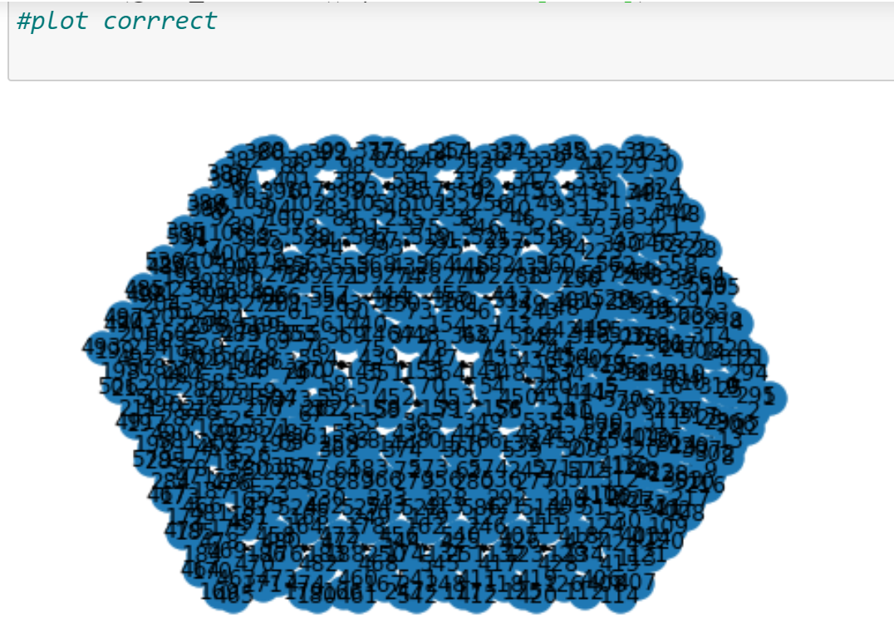
Correct cube
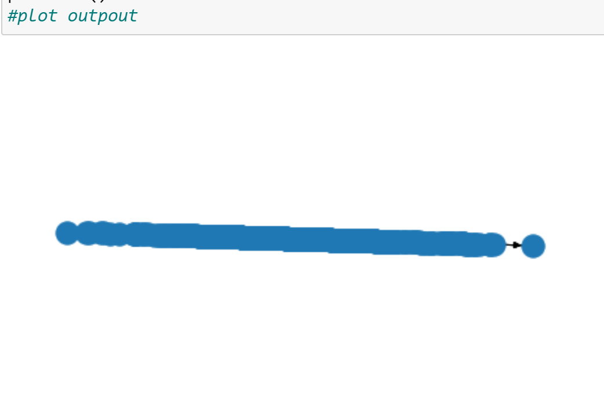
net 'cube'
Overcomplete GCN
Specs:
- Layers: 3-32-32-32-3
- Activation: relu
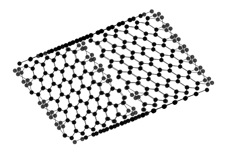
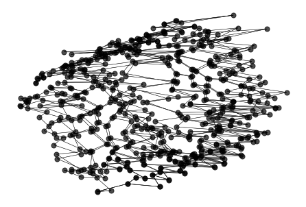
View1
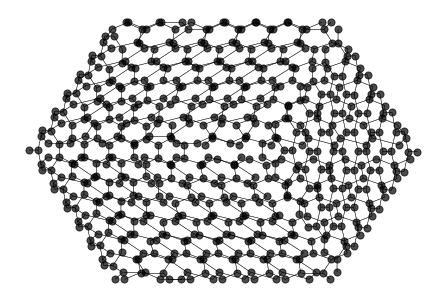
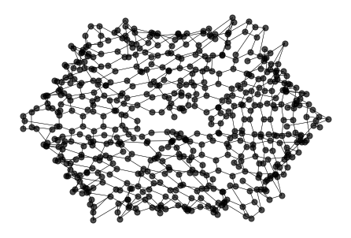
View2
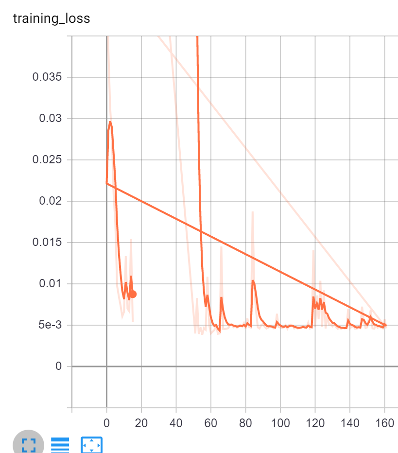
Loss (rightmost line)
Dropouts
Specs:
- Layers: 3-32-32-32-3
- Activation: relu
- Loss: MSE
- Indrop: drop input layer with 0.6
- Middrop: drop hidden layer with 0.5
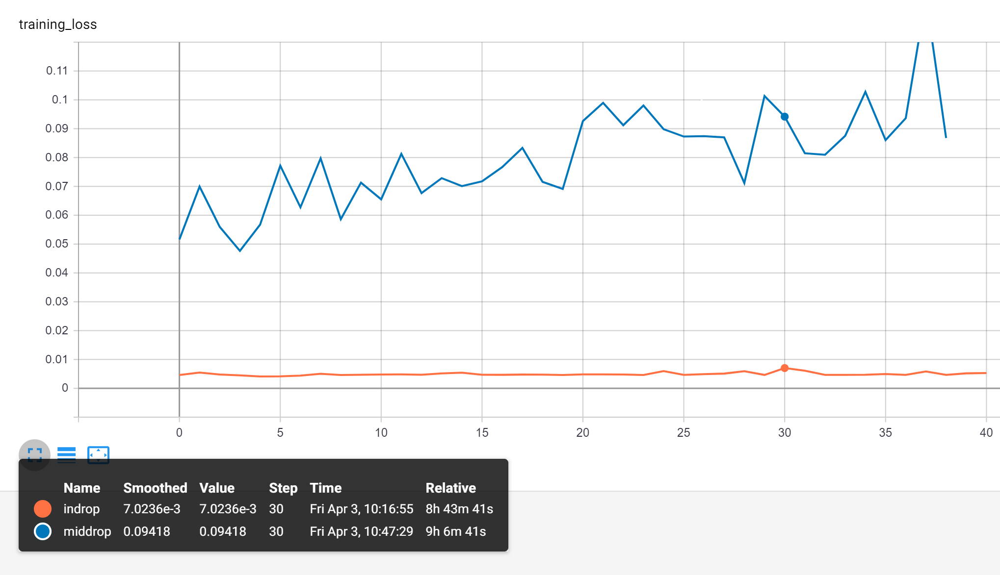
Loss
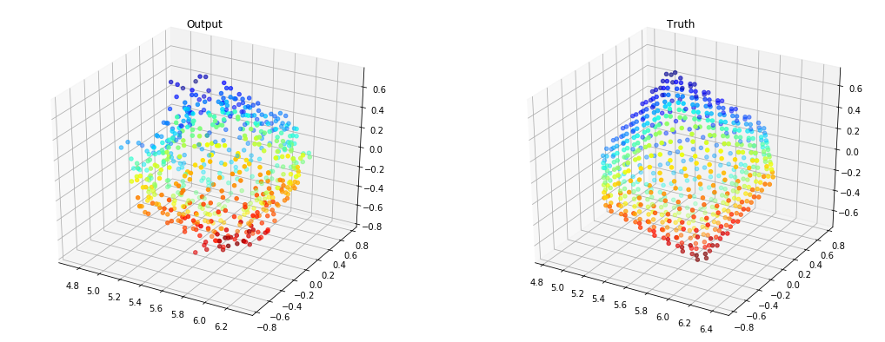
Indrop [similar to no drop]
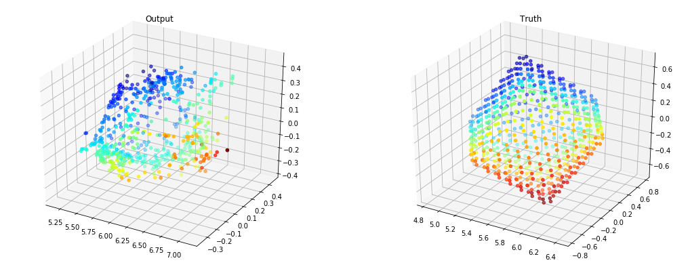
Middrop [btw middrop loss increases?]
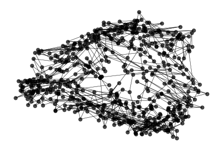
Graph of middrop
L1 and leaky
Specs:
- Layers: 3-32-32-32-3
- Activation: relu
- Loss: MSE
- L1: MSE + MAE loss
- Leaky: leakyrelu activation
- L1leak: both of the above

Loss
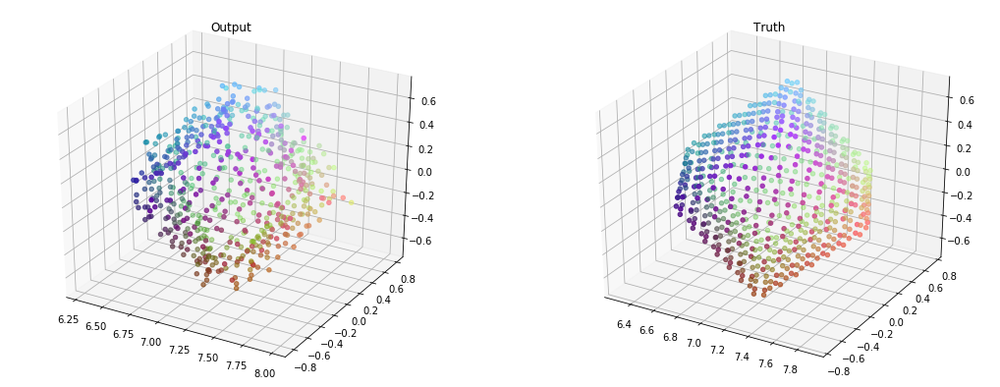
L1
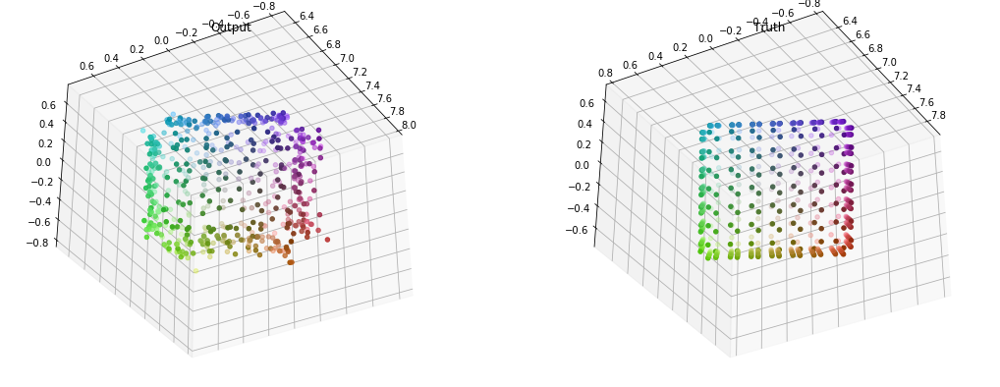
Leaky
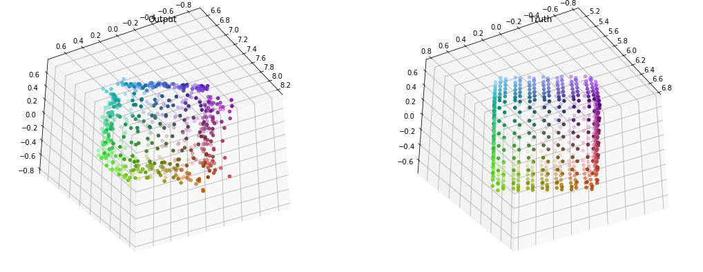
LeakyL1
I realized the net is just memorizing one cube,since my input data was skewed due to how i initialize camera...
Dropout with new data
Specs:
- Layers: 3-32-32-32-3
- Activation: Leaky relu
- Loss: MSE + MAE
- Dropout: hidden/input 0.5
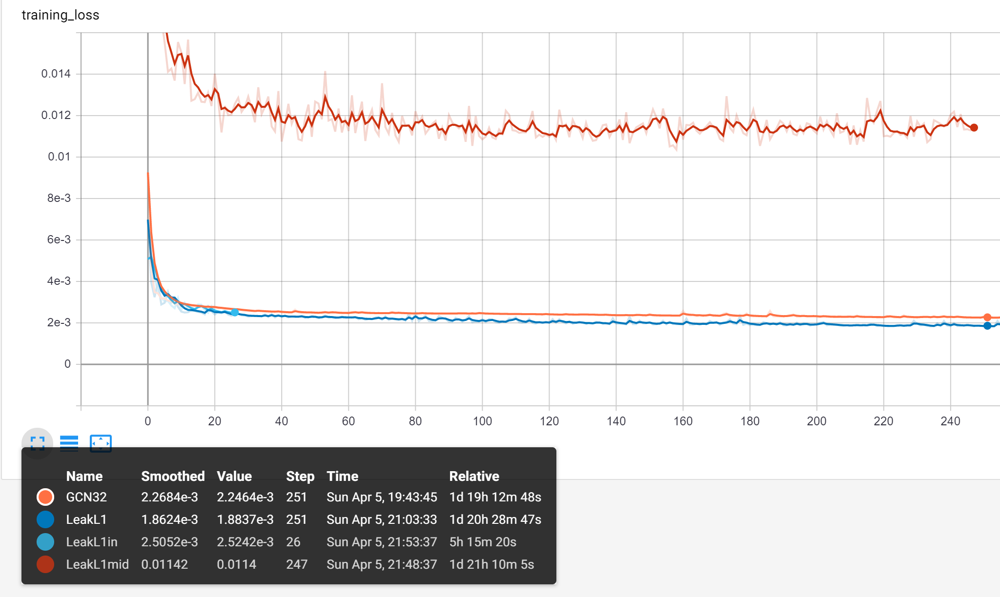
Loss
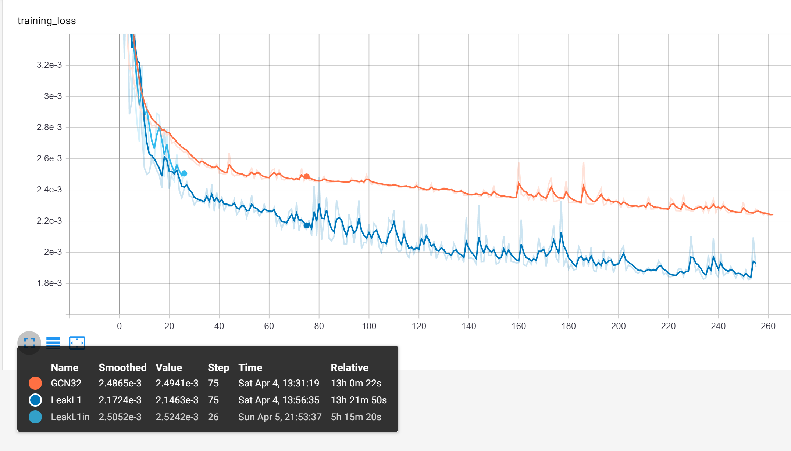
Closer look at loss
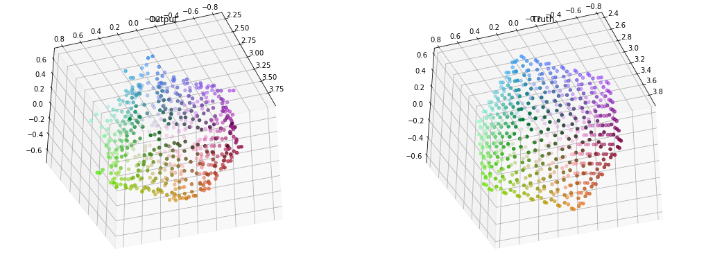
GCN32
L1Loss:0.03315
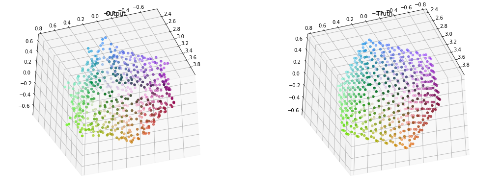
Leak L1
L1Loss:0.03002
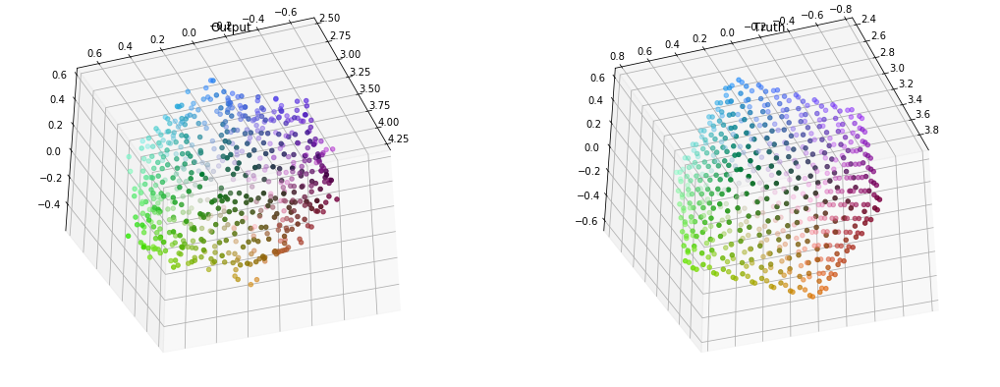
L1leakmid: hidden layer dropout with 0.5
L1Loss:0.07126
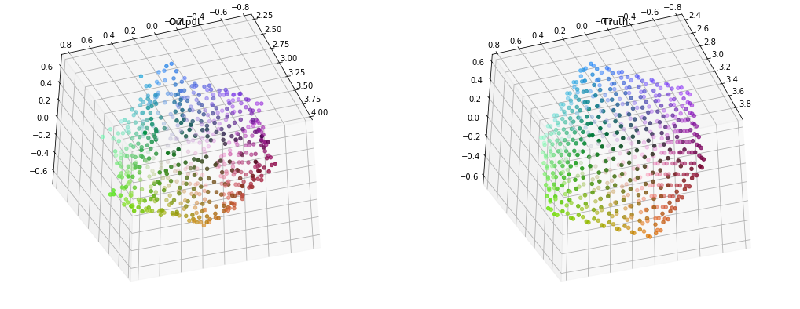
L1leakin: input layer dropout with 0.5
L1Loss:0.03505
It seems like the GCNs are failing to get properties of sharp edges...